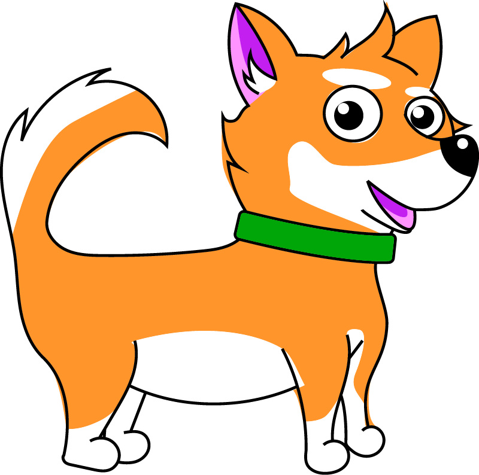

Da click aquí para contactarme

Da click aquí para contactarme
A/Part Creative Studio tiene como misión brindar herramientas de MKT a startups premium, a través de un equipo compuesto por expertos en MKT y diseño.
En esta empresa me encargue del naming y branding. Así como el puesto de director de Arte hasta la actualidad.
Después de una lluvia de ideas entre los miembros fundadores, propuse el nombre derivado de la película A bande à part de uno de mis directores favoritos. Ya que el concepto del nombre se ajusta por completo a una de las misiones principales de la empresa, el desmarcarse de la competencia por medio de un trato y procesos distintos a los tradicionales.
El isotipo se creó con una tipografía Open Source Sans Pro, y un peso bold, para hacer énfasis en el leit motiv de la empresa; tomar cada proyecto como si fuera el único. Y la diagonal hace referencia por un lado al aspecto tecnológico, con énfasis en el diseño web, como principal herramienta de crecimiento; así como a la división de la empresa con el resto de sus competidores.
Los elementos secundarios fueron creados a partir del estilo propuesto en el isotipo y las características, visiones y esencias de cada uno de los integrantes del equipo. Por lo que estos elementos fueron creciendo en cantidad a lo largo del tiempo y los proyectos por los que el equipo trabajó en conjunto.
Como parte de la nueva etapa en la que se encuentra la empresa, se ha decidido llevar a cabo un rebrand de la imagen, con el fin de mostrar una imagen más ad/hoc de los clientes y el expertise obtenido por parte de todos los miembros del equipo.
Una tipografía light y una paleta de color menos saturada como reflejo de una actitud más dinámica y classy de la empresa.

Send whatsapp
Paletas de color en degradados al estilo Blade Runner 2049 y un estilo minimalista y funcional.
Aldo es un amigo intelectual y geek, que disfruta de estar al día con las últimas tendencias tecnológicas y puede ayudarte a solucionar cualquier problema con tu dispositivo.
Pat, es carismático y afable; es un diseñador que siempre está abierto a experimentar nuevas técnicas y herramientas para su trabajo. Siempre estará dispuesto a escucharte y apoyarte en la medida de sus posibilidades.